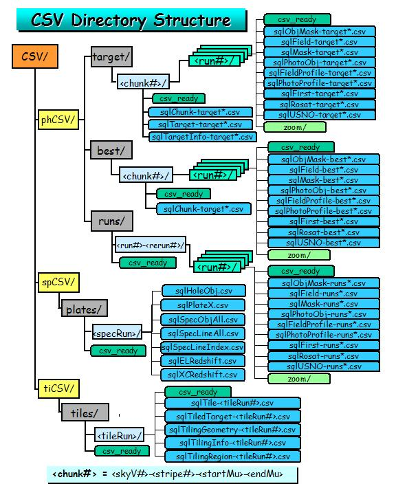

Root Directories
All data locations are relative to a root directory.
- imagingRoot at FNAL is /sdss/data
- spectroRoot at FNAL is /sdss/data/spectro -> /data/dp9.a/data/spectro
- targetRoot at FNAL is /sdss/data/targetRoot -> /data/dp21.a/data/inchunk_target_v5_4
- bestRoot at FNAL is /sdss/data/bestRoot -> /data/dp21.a/data/inchunk_best_v5_4
- tilingRoot at FNAL is /sdss/data/tilingRoot -> /opdb/d1/data/tileChunk
- csvRoot at FNAL is /sdss/data/csvRoot -> /data/dp23.b/data/csv
Production Directories
Imaging Data Directories
Name: imagingRoot/$run/$rerun where
- $run is the run number, format %d
- $rerun is the rerun number, format %d
Each $run/$rerun may have the following directories:
- astrom -- results of the astrom pipeline
- calibChunks -- in $camCol directories,
results of target selection (tsField, tsObj)
- corr -- in $camCol directories, the corrected frames (fpC)
- dplogs -- log files from data processing and quality control
- fangs -- in $camCol directories, the fang files
- fields -- in $camCol directories, the raw frames
- gangs -- the gang files
- logs -- parameter files from the telescope
- nfcalib -- results of photometric calibration
- objcs -- in $camCol directories, outputs of photo: (fpAtlas, fpBIN, fpFieldStat, fpM, fpObjc, psBB, psField)
- photo -- plan and parameter files to help run photo pipelines
- psFangs -- in $camCol directories, the psFang files
- sq -- results of the setQuality pipeline
- ssc -- plan and parameter files to help run ssc, also contains the known object catalog
-
Zoom -- in $camCol directories, the fpC*z??.jpeg files
Spectro Data Directories
Name for 2d pipeline outputs:
spectroRoot/2d_$rerun/$plate where
- $rerun is the spectro rerun number, format %d
- $plate is the plate, format %04d
Name for 1d pipeline outputs:
spectroRoot/1d_$rerun/$plate where
- $rerun is the spectro rerun number, format %d
- $plate is the plate, format %04d
Each 1d_$rerun/$plate has the following directories:
- 1d has the spSpec files
- gif has the spPlot files
Name for photo measurements of spectro targets:
spectroRoot/3d_$rerun/$plate where
- $rerun is the spectro rerun number, format %d
- $plate is the plate, format %04d
Each 3d_$rerun/$plate has the following directories:
- spAtlas-$plate-$mjd-$rerun has the spAtlas files
Directory of clean spectroscopic sample data:
spectroRoot/ss_$rerun/$plate and ss_tar_$rerun/$plate.tar.gz where
- $rerun is the spectro rerun number, format %d
- $plate is the plate, format %04d
The plPlugMapM files should be found in 2d_$rerun, 1d_$rerun and ss_$rerun.
Last resort, look in spectroRoot/speclog. There the sdReport may be found,
as well. There is one directory for each MJD.
Note that there can potentially be a different MJD for plugging and
observing. You have to look in the header of the
spSpec or spPlate files to find the plugfile.
Target Data Directories
Name:targetRoot/stripe$stripe_mu$mu_$skyVersion
where $stripe is the stripe number (format %d), $mu is the
starting mu (format %6d), and $skyVersion is the sky version
(format %d):
- skyVersion = 0: targeted sky
Best Data Directories
Name: bestRoot/stripe$stripe_mu$mu_$skyVersion
where $stripe is the stripe number (format %d), $mu is the
starting mu (format %6d), and $skyVersion is the sky version
(format %d):
- skyVersion = 1: best sky (better reruns)
Tiling Data Directories
Name: tilingRoot/chunk$chunk contains the
tiling information for spectro tiling chunk # $chunk.
Imaging CSV Directories
- phCSV/ directory - contains the imaging (photo) CSV
files. The tables that will be loaded from here are the Chunk,
Segment, Field, Mask, ObjMask, PhotoObj, Profile
, First, Rosat, and USNO tables. There is
a different subdirectory for each skyVersion of the data to be loaded:
- target/ directory - contains CSV files for the TARGET (skyVersion
= 0) data.
- <skyVersion#>-<stripe#>-<startMu>,
e.g. 0-42-123456 : This is the chunk/stripe level directory that contains
the individual runs. This level is necessary to allow for the possibility
that a given run may overlap more than one chunk.
- <run#>/: There is one subdirectory for each run to be
loaded. The subdirectory name is the run-number (run#). The
files in each run# directory will be named <tablename>-target-<run#>-<rerun#>[_<sequence#>].csv
(the sequence number is used if necessary when files get very large), and
the following files will be deposited here:
- csv_ready: The csv_ready file is a semaphore file
indicating that the CSV files for this run are ready to be loaded.
This is necessary in case new runs are added while the robot is queueing
the existing runs to be loaded, and also for the future when we load runs
in parallel.
- sqlField-target-<run#>-<rerun#>.csv, e.g. sqlField-target-752-8.csv
- sqlFieldProfile-target-<run#>-<rerun#>.csv, e.g.
sqlFieldProfile-target-752-8.csv
- sqlFirst-target-<run#>-<rerun#>.csv, e.g. sqlFirst-target-752-8.csv
- sqlMask-target-<run#>-<rerun#>.csv, e.g. sqlMask-target-752-8.csv
- sqlObjMask-target-<run#>-<rerun#>.csv, e.g. sqlAtlas-target-752-8.csv
- sqlPhotoObjAll-target-<run#>-<rerun#>_<seq#>.csv,
e.g. sqlPhotoObjAll-target-752-8_0.csv
- sqlPhotoProfile-target-<run#>-<rerun#>_<seq#>.csv,
e.g. sqlPhotoProfile-target-752-8_1.csv
- sqlRosat-target-<run#>-<rerun#>.csv, e.g. sqlRosat-target-752-8.csv
- sqlSegment-target-<run#>-<rerun#>.csv, e.g.,
sqlSegment-target-752-8.csv
- sqlUSNO-target-<run#>-<rerun#>.csv, e.g. sqlUSNO-target-752-8.csv
- zoom/: This directory will contain the jpeg zoom files under
the subdirectories 1, 2, 3, 4, 5, 6 for that part of each
camCol contained in the resolved chunk (i.e. without overlaps).
- csv_ready: The csv_ready file is a semaphore file
that tells the robot that the TARGET database is ready to load, i.e. the
CSV files are ready to be queued for loading.
- sqlChunk-target.csv
- sqlTarget-target.csv
- sqlTargetInfo-target.csv
- best/ directory - contains CSV files for the BEST (skyVersion
= 1) data.
- <skyVersion#>-<stripe#>-<startMu>,
e.g. 1-42-191169 : This is the chunk/stripe level directory that contains
the individual runs. This level is necessary to allow for the possibility
that a given run may overlap more than one chunk.
- <run#>/: As above, there will be one subdirectory for
each run. The files under this directory will be named
- csv_ready: The csv_ready file is a semaphore file
indicating that the CSV files for this run are ready to be loaded.
This is necessary in case new runs are added while the robot is queueing
the existing runs to be loaded, and also for the future when we load runs
in parallel.
- sqlField-best-<run#>-<rerun#>.csv, e.g. sqlField-best-752-7.csv
- sqlFieldProfile-best-<run#>-<rerun#>.csv, e.g.
sqlFieldProfile-best-752-7.csv
- sqlFirst-best-<run#>-<rerun#>.csv, e.g. sqlFirst-best-752-7.csv
- sqlMask-best-<run#>-<rerun#>.csv, e.g. sqlMask-best-752-7.csv
- sqlObjMask-best-<run#>-<rerun#>.csv, e.g. sqlAtlas-best-752-7.csv
- sqlPhotoObjAll-best-<run#>-<rerun#>_<seq#>.csv,
e.g. sqlPhotoObjAll-best-752-7_0.csv
- sqlPhotoProfile-best-<run#>-<rerun#>_<seq#>.csv,
e.g. sqlPhotoProfile-best-752-7_1.csv
- sqlRosat-best-<run#>-<rerun#>.csv, e.g. sqlRosat-best-752-7.csv
- sqlSegment-target-<run#>-<rerun#>.csv, e.g.,
sqlSegment-best-752-7.csv
- sqlUSNO-best-<run#>-<rerun#>.csv, e.g. sqlUSNO-best-752-7.csv
- zoom/: This directory will contain the jpeg zoom files under
the subdirectories 1, 2, 3, 4, 5, 6 for that part of each
camCol contained in the resolved chunk (i.e. without overlaps).
- csv_ready: The csv_ready is a semaphore file that
tells the robot that the BEST database is ready to load, i.e. the CSV files
are done.
- sqlChunk-best.csv, containing the chunk data.
- runs/ directory - intended to contain CSV files for the RUNS
(skyVersion > 0) data.
- <run#>-<rerun#>/: This will be the chunk (stripe)
level subdirectory. The individual run will be under this directory.
This is for consistency with the directory structure for target and best.
- <run#>/: There will be one subdirectory for each run
to be loaded. There will be no masks for the runs skyversion.
The files in this directory will be:
- csv_ready: This is a semaphore file indicating that the CSV
files for this run are ready to be queued for loading. This is to prevent
premature loading of a run before the CSV generation is finished.
- sqlField-runs-<run#>-<rerun#>.csv, e.g. sqlField-runs-1336-16.csv
- sqlFieldProfile-runs-<run#>-<rerun#>.csv, e.g.
sqlFieldProfile-runs-1336-16.csv
- sqlFirst-runs-<run#>-<rerun#>.csv, e.g. sqlFirst-runs-1336-16.csv
- sqlObjMask-runs-<run#>-<rerun#>.csv, e.g. sqlAtlas-runs-1336-16.csv
- sqlPhotoObj-runs-<run#>-<rerun#>_<seq#>.csv,
e.g. sqlPhotoObj-runs-1336-16_0.csv
- sqlPhotoProfile-runs-<run#>-<rerun#>_<seq#>.csv,
e.g. sqlPhotoProfile-runs-1336-16_1.csv
- sqlRosat-runs-<run#>-<rerun#>.csv, e.g. sqlRosat-runs-1336-16.csv
- sqlSegment-target-<run#>-<rerun#>.csv, e.g.,
sqlSegment-runs-1336-16.csv
- sqlUSNO-runs-<run#>-<rerun#>.csv, e.g. sqlUSNO-runs-1336-16.csv
- zoom/: This directory will contain the jpeg zoom files under
the subdirectories 1, 2, 3, 4, 5, 6 for each camCol.
- csv_ready: The csv_ready file is a semaphore file
that tells the robot that the RUNS database is ready to load, i.e. the CSV
files are ready to be queued for loading.
- sqlChunk-runs.csv, containing the chunk data if applicable.
- log/: The log directory - this is
the default location for the photo log and error files.
Spectro CSV Directories
- spCSV/ directory - contains the spectro CSV files.
The subdirectories below this level are:
- plates/: The data directory containing
the subdirectories for individual spectro runs:
- <year>-<month>-<day>-<hour>,
e.g. 2002-11-19-1300 : Each such directory contains an individual spectro
run. This level is necessary to allow for the possibility that there
may be more than one run. This is the data directory containing the
actual CSV files:
- csv_ready: This is a semaphore file indicating that the CSV
files for this plate run are ready to be queued for loading. This is
to prevent premature loading of a run before the CSV generation is finished.
- sqlPlateX.csv - the data for the PlateX table.
- sqlSpecObjAll.csv - the data for the SpecObjAll table.
- sqlSpecLineAll.csv - the data for the SpecLineAll
table.
- sqlSpecLineIndex.csv - the data for the SpecLineIndex
table.
- sqlELRedshift.csv - the data for the ELRedshift (emission-line
redshifts) table.
- sqlHoleObj.csv - the data for the HoleObj table.
- sqlXCRedshift.csv - the data for the XCRedshift
(cross-correlation redshifts) table.
- <plate#>/gif/: One pair of
subdirectories per plate containing gif plots of
all the spectra on the plate:
- spPlot-<MJD>-<plate#>-<fiberId>.gif
- csv_ready: The csv_ready a semaphore file that
tells the robot that the spectro data is ready to load, i.e. the CSV files
are ready to be queued for loading.
- log/: The log directory - this is
the default location for the spectro log and error files.
Tiling CSV Directories
- tiCSV/ directory - contains the tiling CSV files.
The subdirectories below this level are:
- tiles/: The data directory containing the
subdirectories for individual tiling runs:
- <tileRun#>-<year>-<month>-<day>-<hour>,
e.g. 10-2003-01-8-1800 : Each such directory contains an individual tiling
run. This level is necessary to allow for the possibility that there
may be more than one run. The files in each such directory are:
- csv_ready: This is a semaphore file indicating that
the CSV files for this tiling run are ready to be queued for loading. This
is to prevent premature loading of a run before the CSV generation is finished.
- sqlTileAll-<tileRun#>.csv - the data for the TileAll
table.
- sqlTiledTargetAll-<tileRun#>.csv - the data for
the TiledTargetAll table.
- sqlTilingGeometry-<tileRun#>.csv
- the data for the TilingGeometry table.
- sqlTilingInfo-<tileRun#>.csv
- the data for the TilingInfo table.
- sqlTilingRun-<tileRun#>.csv
- the data for the TilingRun table.
- csv_ready: The csv_ready a semaphore file that
tells the robot that the tiling data is ready to load, i.e. the CSV files
are ready to be queued for loading.
- log/: The log directory - this is
the default location for the tiling log and error files.

Figure 1. The directory structure layout for the CSV files.